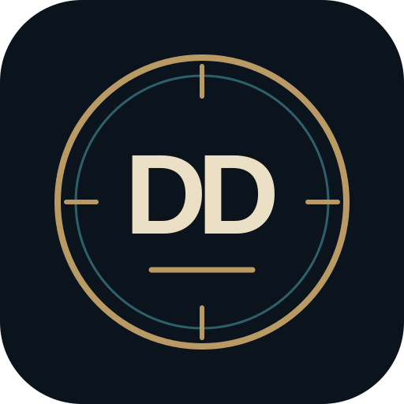

Explore the unexplained.
Follow the evidence.
Investigate real research topics, reported encounters and questions that remain unanswered.
Beyond the headlinesLatest reports
Source-linked newsStories you opened on this device remain here even after they leave the current news feed. Original publisher links may eventually expire.
Most widely reported topics in our collected news catalogue. Ranked by distinct publishers, not article views. This is NOT a global popularity ranking or evidence that claims are true.
Add up to five topics. Your choices stay on this device and appear alongside our usual news categories.
Evidence Archive
10,000+ SOURCE-LINKED RECORDSExplore original historical and modern UAP investigations, government case files, and research collections. Filter by year, subject or document type; source links and dates are provided where available. A recorded investigation is not proof of an extraordinary explanation.
⚖ Compare Two Cases
Compare documented records side by side. Shared features do not prove a relationship.
Choose cases below or use Compare in search results.
Historical reports, original records and archival collections. Dates may refer to events or record coverage, not the publication date. Source claims are not proof of extraordinary origins.
Loading historical sources…
Historical satellite research
Search a public archive case, then open its existing case-scoped satellite research window. We use the documented event date and approximate town location only when those are verified in its source. A record year is not an event date, and a viewer link is not proof an image exists.
Loading public archive records…
Official historical archives
For a 1976 sighting, USGS Landsat 1–5 MSS offers a historical scene search. NASA MODIS daily imagery generally begins in 2000; the EUMETSAT historical viewer starts in 1981. Every source has geographic and temporal gaps. Confirm a real scene's acquisition timestamp and footprint before drawing conclusions.
This is a source lookup, not automatic retrieval of the nearest frame. Weather satellites and historic Landsat scenes are not continuous CCTV footage of the sky.
Disclosure Map
CURATED CASE MAPShowing: World view · All mapped reports
About this map & sources
Explore UAP reports, reported encounters and disclosure documents. Pins indicate approximate regions, never private witness addresses. An archive record or eyewitness account does not establish an extraordinary explanation. New reports will be mapped only after source, date and location review.
Time filters use a verified event or publication date. Historical cases without an exact date appear under All time. New disclosures will be added after source and location review.
Archive map uses only location-reviewed, city-level markers; most archive files are not yet geocoded.
🎬 Official government footage · Tap to expand
🎬 Official footage awaiting map verification
Case-identified government-hosted video records. Some show only a country, sea, or operational region; they are not assigned invented map pins.
Source-linked archive cases for this year
Investigative Case Files
Featured case investigationsA picture-led shortlist of landmark mysteries. Images are atmospheric illustrations unless specifically credited otherwise. Save cases with the yellow star or open the full evidence file.
Documents & Research
SOURCE LIBRARYExplore original records, research organisations and independent FOIA archives. A document mentioning a claim does not establish that the claim is true.
Browse the full Sources & Archives directory ↗ for original archives, citation examples and country filters.
Podcasts & Interviews
LISTEN & WATCHFind original shows and interviews about UAP reports, unusual science, archaeology and consciousness. Hosts' claims remain their own; episodes are not independently verified by this app.
My Investigation Board
PRIVATE · ON THIS DEVICECollect public research links, make private notes and group your discoveries. Nothing is posted online. The existing Share action sends public links only. Print / Save as PDF includes private notes only when you choose it; review before sharing.
My saved boards
Account & board tools
☁️ My Account & Cloud Backup
Your private research hub. Keep boards on this device or transfer them securely between devices when you choose. News, cases and videos remain free without an account.
Cloud count not checked yet.
Your username will be public and searchable for Chat by default once you sign in. Others can send you Chat requests, which you can accept or decline. You can hide your username or turn off requests later in Profile. Your email stays private.
Already registered?
Cloud backup is manual. Existing boards are never overwritten. Export a board file for an extra offline backup.
Connecting to account service…
Your cloud data is stored privately in Disclosure Desk's separate Supabase project. See Privacy Policy.
New collection
Import a shared case board
Import a Disclosure Desk board file as a NEW collection. Check notes before sharing files with others.
Export your research
Choose a collection and export a professional dossier or a transferable board file. Private notes are included only after confirmation.
PDF opens the branded print view, where you select Save as PDF. Board files can be imported into another Disclosure Desk installation. DOCX export is not available yet.
Explore every published clip, with evidence status visible on each record.
Only source-linked footage is included. Official release does not mean the object or interpretation is verified. Third-party content belongs to its original publisher.
🕳️ Rabbit Hole
UNVERIFIED & DISPUTEDWatch & Read
COMMUNITY LIBRARYDiscover documentaries, films and books recommended by the UAP community.
W.NE Research Studio
Write. Nothing Else. For investigation.
Bring reports, research sections, evidence, citations and private investigation Boards together in one focused workspace.
New to W.NE? Read about Research Edition, its features and privacy.
Sign in using your existing Disclosure Desk account. On this browser, returning users resume their last accessible document. Guest preview is read-only, using sample data only.
Explore Disclosure Desk
New here? Start with a tour. Explore also includes our research approach, support information and privacy guidance.
Get to know Disclosure Desk
See how News, Archive, W.NE Research Studio, Map, Videos, LIVE hearing recordings, Boards, Witness, Watch & Read and Profile fit together.
Want step-by-step instructions? Our complete guide explains each research tool, evidence-checking workflows, private notes and beta features.
📖 How to Use Disclosure Desk · 31 FAQs ↗How to assess a report
Our news, cases, videos and research links are starting points for investigation, not proof of a claim.
- Trace the source. Find the original document, footage or firsthand account where possible.
- Check the context. Look at the date, location, alternative explanations and any missing information.
- Separate evidence from interpretation. Note what is documented, alleged, disputed or unresolved before drawing conclusions.
Source attribution and corrections matter. If we have overlooked an original source, please contact us below.
Sources & Archives
Search original government UFO collections and independent research sources by country and publisher. The directory explains attribution and links you directly to primary archives.
Browse archival sources ↗Contact & enquiries
Questions about Disclosure Desk or W.NE Research Edition? Send us an email using the appropriate subject.
Email: support@uapdisclosuredesk.com. Please do not email private research, passwords or identifying witness details.
Community Rules & moderation
Understand signed-in witness submissions, the three-reports-per-day limit, automatic publication, town/city-only map pins, likes and dislikes, and how community flagging works.
The public witness-submission, voting and community-publishing features are being built. The rules explain the planned procedure while private drafts remain available.
Your privacy matters
Guest previews show example content only. Signed-in Boards and Research Studio documents are separate from the public archive. Some older local notes and backup copies remain on your device.
Writing suggestions may send the text being checked through our authenticated LanguageTool service. Read the policy before using W.NE with sensitive material.
Witness Reports
Record an experience privately, or publish an approximate town/city report using a signed-in account when community submissions are enabled.
Record an experience
My private drafts
About Disclosure Desk
Learn every research tool
Follow practical investigations from first report to original source, Map, private Boards and W.NE Research Studio. Includes a searchable FAQ, privacy notes, satellite research guidance and clear public versus beta availability.
Open How-to & FAQ ↗Watch the mystery. Check the source. Follow the evidence.
Disclosure Desk brings together news reporting, historical case records, attributed source links and research tools to help people investigate UAP and other unexplained claims.
We are independent of government agencies and the organisations whose records we reference. Official publication is not proof of an extraordinary explanation, and original publishers retain ownership of their material.
Sources & Archives
Explore a searchable directory of original government UFO/UAP archives, official investigators and independent research collections. Review source links, credit guidance and reuse considerations.
Explore Sources & Archives ↗Write. Nothing Else. Research with purpose.
W.NE is software by Boyd Digital Studios. Research Edition adapts the original W.NE editor for investigations, evidence notes, section-based reports, comparisons and citations.
Open the W.NE tab to access Research Studio with your existing Disclosure Desk account, or explore a separate, read-only sample as a guest. Guest visitors cannot open private documents or saved investigation Boards.
Research Edition is in beta. Check saved changes, exports and backups before relying on it for irreplaceable research. Writing assistance uses a secured LanguageTool service.
By Boyd Digital Studios
Disclosure Desk and W.NE Research Edition are projects created by Boyd Digital Studios. We develop practical tools for research, discovery and creative work.
Questions, corrections or beta feedback? Contact support@uapdisclosuredesk.com.
One-to-one messaging · New requests require acceptance.
Community Discussions
PUBLIC COMMUNITYCreate research sections, discuss evidence and share sources. Open posts need no section-steward approval. Stewards organise and escalate issues; they cannot silence people for disagreeing.
Section
Steward settings · Organise, don't gatekeep
You can update this section's description and topic, pin up to three threads, and escalate issues. You cannot ban members, require approval or erase others' posts.
Replies
My Research Hub
PRIVATEYour research, Boards, community contributions and account settings together. Everything remains private unless you choose to publish it.
Sign in to your Research Hub
You can browse Disclosure Desk as a guest. To view private files or post contributions, use your existing Disclosure Desk account.
👤 My profile photo
ⓘ About profile photos
Your photo appears beside your public username in Chat and Discussions and on your own navigation icons. It saves automatically when chosen, resized to 512 × 512 pixels as a WebP or JPEG (5 MB maximum original, saved photo under 1 MB). The original metadata is discarded. You can hide or remove the photo at any time. Hidden pictures are protected from new downloads, but previously saved copies cannot be recalled.
Researcher
✎ My W.NE Research
Recent private cloud documents. Unsynced or device-only research may not appear here.
Recently deleted cloud documents
Restore deleted cloud copies here. Permanent deletion requires a second confirmation; documents containing linked media may require support. Local files and downloaded backups are not affected.
▣ Investigation Boards
Private cloud Boards. Device-only Boards remain in the Boards tab.
💬 My Comments
Recent comments and moderation status, visible only to you.
◉ My Witness Reports
Your reports and whether they are published, hidden or removed.
👤 Public Username
Choose a display name and decide whether it appears with your approved comments. Your sign-in email stays private.
✉ Private Chat
Accepted chats, pending requests and the conversation window all live in this section. No group chats.
🔒 Account & Security
Backup and recovery remain under Boards. For personal-data exports, contact support@uapdisclosuredesk.com.
Delete my account
Account deletion is permanent. Please export any research or Boards you want to keep. This starts a secure deletion request with support; it does not instantly delete your data.
Request account deletion🛡 Admin Centre
MODERATOR ONLYVisible only to authorised community administrators. Server-side permissions independently protect every moderation action.
Discussions · Overall Admin Review
This queue is restricted by the site-owner database allowlist, separate from community section stewards and ordinary comment moderators. Review hidden/escalated threads and replies, and revoke steward authority without deleting the section.
Flagged or escalated threads and replies
Section stewardship
Urgent safety & requests
Ordinary comments and reports publish immediately. Only hidden items enter the normal review queue. Urgent abuse/privacy reports, appeals and correction requests need a dedicated inbox in a later phase.
Open support emailSite traffic & search
Google Search Console shows search clicks and impressions; Google Analytics 4 measures public-page visits only after a visitor opts in. Figures are viewed in the Google Analytics dashboard; no private research or messages are measured. Read-only Google access will be secured on the server, not exposed in the browser.